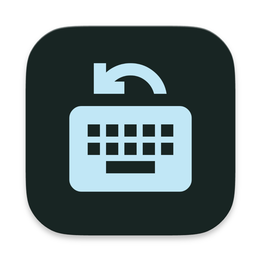

InputPilotInputPilot notices which keyboard you are typing on and switches the macOS input source to match. Map each keyboard once, then stop thinking about it.
brew install --cask lucagerlich/tap/inputpilot
A German keyboard on the desk, a US layout built into the laptop. Every time you move between them, the layout is wrong: the y and z swap, the slashes hide somewhere else, and you fix it by hand — again. macOS switches input sources per app, per document, per window. It does not switch per keyboard.
InputPilot does exactly that, and nothing else.
Three steps, once.
Type on each keyboard so InputPilot learns it. Keyboards are recognised again after unplugging, reconnecting, or moving to another port.
Assign an input source to each keyboard in Settings. Add fallbacks if you want a sensible default for anything unmapped.
Start typing and the layout follows the keyboard. A debounce and cooldown keep it from flapping when you switch quickly.
Small on purpose. It solves one problem properly instead of becoming a keyboard manager.
Each keyboard gets its own input source, with per-device and global fallbacks for everything else.
Reverse the last automatic switch from the menu bar when it guesses wrong.
Silence switching for 15 or 60 minutes when it would get in the way.
Notices when a mapping points at an input source you have since removed, and offers to fix it.
A lone ⇧ or ⌘ during ⌘-Tab will not change your layout. Opt in if you want it to.
Signed updates through Sparkle, verified against Apple's notarization and a cryptographic signature.
InputPilot asks for Input Monitoring — the permission that lets an app see keyboard events. That is a lot to ask for, so here is precisely what it does with it.
It reads which keyboard sent a key press. It does not read the key.
Sandboxed apps cannot read HID devices directly, and that is the only way to tell keyboards apart. So InputPilot is distributed outside the App Store, signed with a Developer ID certificate and notarized by Apple — it opens without warnings.
Some Macs do not populate that list automatically. Add it by hand: System Settings → Privacy & Security → Input Monitoring → + → pick InputPilot in Applications, then switch it on.
macOS applies Input Monitoring on the next launch. Quit InputPilot and open it again.
Yes. Keyboards are identified by vendor, product, transport and name, so a Bluetooth keyboard is recognised again after reconnecting.
Nothing. It is free and open source under the Apache 2.0 licence.
macOS 13 or newer. Takes about a minute to set up.